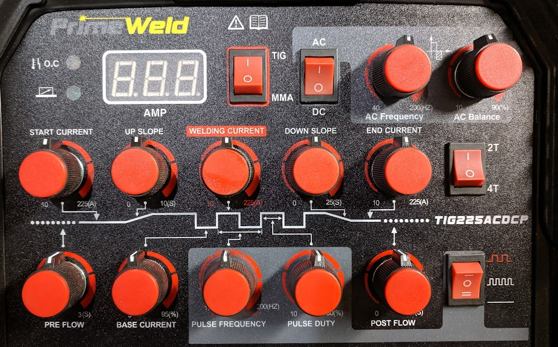

Hello and welcome to my homepage. Since the information content of this page is not important I have provided for your enjoyment a highly educational overview of the controls of a TIG welding power supply.

OC Light - Over Temp light, when illuminated the power supply has overheated and cannot be used until it cools off
Foot Control Light - Illuminated when a TIG foot pedal is properly connected.
AMP Display - Displays the currently selected maximum welding current level. When the supply is running shows a live view of the exact current.
TIG/MMA Switch - Choose between TIG and MMA also known as "Stick" power supply modes.
AC/DC Switch - Choose between direct current or alternating current supply modes.
AC Frequency Knob - When AC mode is selected, adjust the number of times per second the current of the AC waveform alternates between positive and negative.
AC Balance Knob - When AC mode is selected, percentage of time per cycle the AC current spends flowing towards the negative side of the circuit.
Start Current Knob - in 2T or 4T mode determines the initial current to start the up slope.
Up Slope Knob - Sets the time taken to slope from starting current to welding current.
Welding Current Knob - Sets the main welding current for MMA and TIG modes, used as the high current when pulse is enabled.
Down Slope Knob - Sets the time taken to slope from welding current to end current.
End Current Knob - Sets the down slope target current.
2T / 4T Switch - When using a torch switch, determines if the switch is in momentary or latching mode.
Pre-Flow Knob - Determines for how many seconds shielding gas flows from the TIG torch before the start current begins.
Base Current Knob - Determines the low welding current value when pulsing is enabled.
Pulse Frequency Knob - Frequency of the pulses, value depends on the setting of the pulse mode switch.
Pulse Duty Knob - Sets the percentage of time per pulse that the welding current spends at the level set by the welding current knob.
Post Flow Knob - Determines for how many seconds shielding gas flows from the TIG torch after the welding current ends.